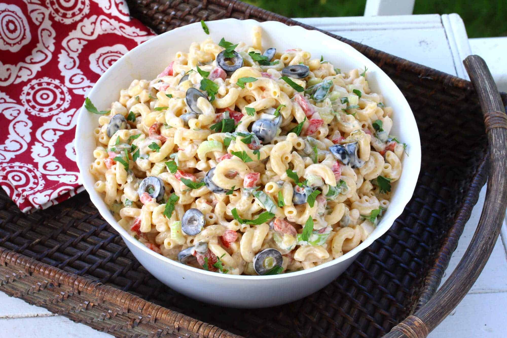

Macaroni Salad

Macaroni Salad
Macaroni salad is a classic American side dish that's typically served cold. It's made with cooked elbow macaroni that's mixed with a creamy dressing made from mayonnaise, vinegar, Dijon mustard, sugar, salt, and black pepper.
Ingredients
- 1 pound elbow macaroni
- 3/4 cup mayonnaise
- 1/4 cup white vinegar
- 1 tablespoon Dijon mustard
- 1 teaspoon sugar
- 1/2 teaspoon salt
- 1/4 teaspoon black pepper
- 2 stalks celery, finely chopped
- 1 small red onion, finely chopped
- 1 red bell pepper, seeded and finely chopped
- 1/4 cup chopped fresh parsley
- Optional: 1/2 cup diced ham or cooked shrimp (for added protein)
Steps
- Cook the macaroni according to the package instructions until al dente. Drain and rinse with cold water to cool it down quickly.
- In a large bowl, whisk together the mayonnaise, white vinegar, Dijon mustard, sugar, salt, and black pepper until well combined.
- Add the cooked macaroni, celery, red onion, red bell pepper, and parsley to the bowl with the dressing. Stir well to combine.
- If using, add the diced ham or cooked shrimp and stir gently to incorporate.
- Cover the bowl with plastic wrap and refrigerate for at least 2 hours, or up to overnight, to let the flavors meld together.
- Before serving, give the macaroni salad a good stir to redistribute the dressing and flavors. Adjust seasoning with additional salt and pepper as needed.
- Serve chilled and enjoy!